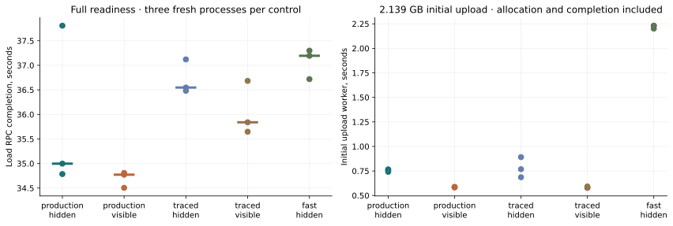
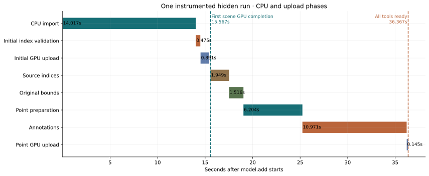
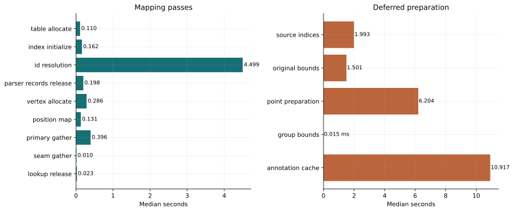
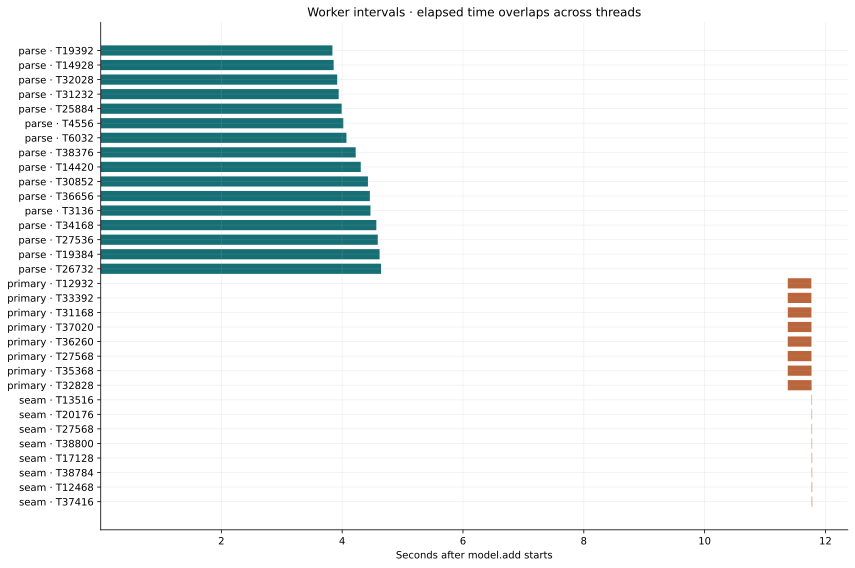
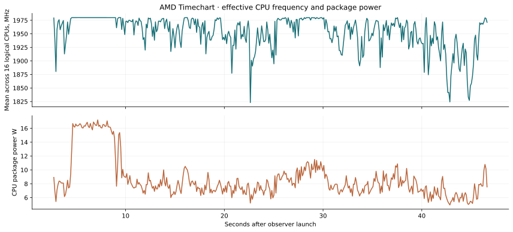
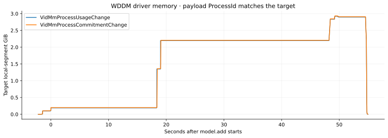
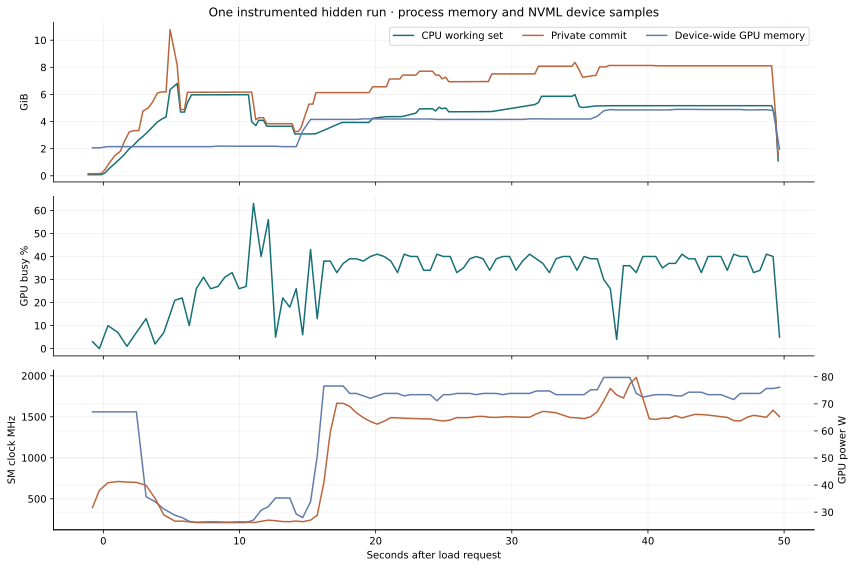
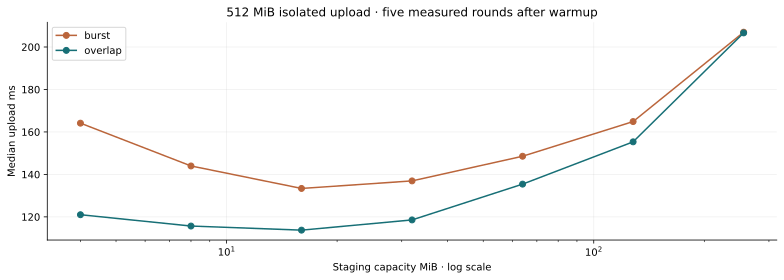

14 October 2026 · woby 0.29.0 · revision 7ee6133eb133b2102551ebd47a3ecca263e86cce
BearTrap: first frame and full readiness are different endpoints
The first model frame completes on the GPU at about 15.57 s. The production hidden viewer returns the completed load at 35.00 s.
The remaining work is source topology, original-coordinate bounds, point preparation, and annotations. The scene can render while this worker runs. The load RPC waits for its completion.
Native viewer controls establish end-to-end times. Instrumented copies provide phase boundaries. Hardware profiles are separate diagnostic runs. A completed GPU frame does not measure the time when a person sees pixels on a display.
Native controls · Phases · Hardware · Memory · Rendering · Next actions · Evidence
What the latest commits changed
These are observations of the current implementation. The prior report used an earlier revision and a different timing batch. This investigation does not claim a before/after speedup for each commit.
Staged mapping operation counts
First positions, primary hits, and secondary lookups partition all 227,315,958 corners. Secondary lookups are only 0.580% of corners. Most resolution work uses the primary path. The diagnostic build records exact operation counts; its extra increments make its wall time unsuitable as a native control.
Native controls and endpoint definitions
The native CPU-frame time is bracketed by the performance.begin RPC. A scene revision change selects the first scene frame. This is CPU frame completion, not GPU completion. The generated viewer adds a first-scene token and checks its GPU completion. Screenshot completion is a later verification endpoint and uses a separate 1920×1800 capture.
Three rotating rounds use fresh Release processes and a warmed 7,108,991,827-byte input. The fixed drawable is 1280×720. The model viewport is 805×687 with 4× MSAA. Visible controls stayed focused in their settled recordings.
The initial upload contains 2,138,524,344 bytes. Its timer includes buffer creation, staging, submission, and GPU completion. It is not a PCIe-only transfer timer. The old research fast-pacing viewer also logs upload polls. A separate control removes those logs.
The hidden trace median for full readiness is about 4.4% above its native control; the visible trace median is about 3.1% above its native control. Markers and generated code can affect timing. Phase times locate work; native controls establish end-to-end behavior.

PNG · SVG
Inactive pacing · separate paired batch
The 1 ms copy uses the production main loop and has no upload-poll logging. It is slower in each pair. This supports keeping the present inactive pacing for this pipeline. The old result tested a different upload path.
This later batch is slower for both configurations than the first native batch. Its production median is 44.025 s; its 1 ms median is 47.258 s. The cause of the between-batch change is not established. Do not pool the batches or assign that difference to code changes.
Phase boundaries and remaining work

PNG · SVG
PNG · SVG
Whole-group bounds reuse is active. The three hidden traces reuse one complete group and scan zero partial-group vertices. Its median work is 0.015 ms. The separate original-coordinate whole-mesh pass still calls the mesh accessor for each render vertex.
Mapping resolution is serial. Allocation and index initialization have separate intervals. Eight gather workers write to disjoint resolved IDs. Worker intervals overlap; their elapsed times must not be added to the mapping total.
Every measured phase · three instrumented hidden runs
Worker timeline and CPU time

PNG · SVGCaller CPU time uses GetThreadTimes. Process CPU/wall includes concurrent renderer and worker activity. It can exceed one even for a serial phase. A parser parent mostly waits for its children; parent-thread IPC is not a parser throughput metric. Thread IDs and raw per-thread samples are preserved.
Read submit/wait time is measured around the worker's file API calls. It does not include decode time. Parser worker intervals are separate from the waiting parent. Their CPU times and counter samples must be evaluated per thread.
CPU hardware counters and independent profiles
AMD uProf collects cycles, retired instructions, branch events, demand cache fills, DTLB events, and floating-point events. Each event set fits the available counters. FP events require a paired merge counter. User mode is enabled; OS events are excluded.
Phase selection uses absolute QPC timestamps and start-inclusive, end-exclusive windows. A +16 ms window shift measures alignment sensitivity. Ratios omit phases shorter than 100 ms. Parent phases overlap their children and must not be added.
Cache, TLB and FP estimates
Each event column comes from its own event-set capture. Demand-fill events omit prefetch, stores, and other traffic. FP events include arithmetic in unused lanes and do not count useful geometry operations. Comparisons and blends are not FP arithmetic. Sparse zero samples do not prove that an event never occurs. Ratios are sample estimates, not exact dynamic counts.
Known-loop calibration
The calibration interval is 0.450 s. It verifies that the FP event responds to known arithmetic; the short interval exposes sampling and alignment error. It does not establish exact accuracy for every load phase. The full +16 ms alignment sensitivity is in summary.json.
The shift brings the known loop closer to its expected counts. The main tables retain the QPC-metadata alignment and report the shifted selection as a sensitivity check. They do not assume that this short-loop correction is exact for every capture.
Instruction-location samples can skid. They describe observed code locations, not exact dynamic opcode counts or SIMD lane use. Demand cache fills exclude traffic such as prefetch and writes. They do not measure physical DRAM bandwidth.
The production executable has its own uProf capture and linker-map function resolution. VTune supplies an independent software-sampling profile with call stacks and thread summaries. Nsight NVTX ranges show worker overlap. WDDM records add allocation, memory-transfer, and presentation evidence.
Function and thread profiles
Production executable · load-window CPU samples
This is the uninstrumented production executable. Function names use the matching linker map and the captured executable hash. Shares use the load window only. Map aliases and inlining limit attribution to an individual source expression.
Independent VTune software profile
VTune uses user-mode software sampling and task markers. Its 62.249 s collection includes startup, load, verification, and settled rendering. Total sampled CPU time is 114.422 s over 81 threads. Its function shares cover a different window from the production uProf table. Thread CPU seconds can exceed wall seconds when workers overlap.
Instruction samples and SIMD
Instruction forms and SIMD limits
The separate context sampler decodes 248 recorded instruction locations. It sees waiting threads as well as running threads and adds suspension overhead. Its load time is diagnostic. The hardware retired-event samples provide another biased location distribution. Both show AVX2 code where expected; neither reports exact lane utilization or dynamic SIMD counts.
The SSE2 calibration listing has two packed multiply/add pairs, then subtract and branch, for each of 67,108,864 iterations. It has 402,653,184 loop instructions and 536,870,912 arithmetic operations. The matching assembly is in the source archive.

PNG · SVG
Timechart reports effective frequency for 16 logical CPUs and package/core power at 100 ms intervals. These are system measurements. Windows diagnostic counters run at about one-second intervals. CPU temperature is not provided by the supported Timechart categories.
CPU frequency and power by phase
The frequency mean includes idle logical CPUs. It is not the frequency of the active model-loader core. Phase association uses the QPC epochs of the observer and trace. Windows CPU frequency stays at 1990 MHz in these records and cannot explain phase speed.
Nsight and WDDM ownership
Expanded WDDM tracing records more than one million system events. Target association uses either the emitting process or an explicit ProcessId/hProcessId payload. Memory ownership requires the payload ID. The GPU inventory contains a misleading duplicate adapter name; bus location and adapter LUID identify the physical NVIDIA adapter.
Queue pairs use GPU, context, queue-packet pointer, and submit sequence. Synchronization starts use an unknown packet-type value; the stop supplies the real type. Queue elapsed time includes scheduling and synchronization waits. It is not shader execution time. DMA pairs are a limited subset of copy-engine activity. Matched stops report no timeout or preemption.
The 3,139,715,072 driver-transfer bytes cover the full process, including setup, load, derived resources, and screenshot activity. They are not the initial mesh-upload payload or a direct PCIe measurement. Parent phase rows overlap children.
The expanded runner reached the requested endpoints and saved its trace, then hit the old 45 s profiler-export timeout. Offline export succeeded. Native wall-time conclusions exclude this attempt. The runner now allows 300 s for profiler exit and export.

PNG · SVGLocal-segment usage peaks at 2.924 GiB. Local commitment peaks at 2.933 GiB. Both return to zero at process exit. This is a separate profiled run and a separate ownership measure from CPU working-set pages.
Memory use and release

PNG · SVG
Each checkpoint uses VirtualQueryEx and QueryWorkingSetEx. Page-validity queries cover committed allocations of at least 1 MiB. They do not touch or lock target memory. A scan is not atomic and is outside native timing controls.
Private commit, CPU working set, and GPU memory are separate quantities. Write-combined committed ranges can explain part of their difference. Region size and protection do not identify the allocator owner. WDDM allocation records provide separate driver evidence.
Three load/remove cycles return to approximately 0.38 GiB private commit. The small increase between cycles is retained in the data. This checks observed release; it does not prove long-term leak freedom.
Allocation protection, page validity, and data sizes
PAGE_WRITECOMBINE ranges account for much of the gap between private commit and CPU working set. Page validity does not measure GPU residency. Repeated 16/32 MiB ranges can be driver allocations; protection and size alone do not prove an owner.
These structures have different lifetimes. Do not add temporary and retained payloads to predict a process peak. Capacity includes allocator reservation in some rows. The parser's peak working set remains about 8.84 GiB with 16 workers.
Rendering after preparation
Each settled interval lasts eight seconds. Hidden production pacing is 20 frames/s. Visible controls request 240 frames/s on a 120 Hz display but deliver about 60 frames/s with this scene. Render timing includes the current backend and presentation behavior; it is not a pure geometry kernel measurement.
Feature images: solid · solid edges · solid points · points · edges. Each image uses the separate 1920×1800 capture. Feature timing uses the 805×687 viewport.
Point rendering accumulates results. Once full refinement is complete, a fixed camera can submit zero new points while displaying the stored result. Its settled FPS does not measure full-source point throughput. Transition captures record refinement separately.
The solid-to-points transition submits 42,414,381 point entries across frames. This includes progressive work and is not a count of distinct source points. The final refined count is 38,414,391. The points-only image contains visible geometry; the zero settled submission count does not mean a blank image.
Edges-only rendering uses a depth occluder before its edge draw. Its cost must be compared with the matching view. Screenshots verify solid, combined, point-only, and edge-only output. Camera navigation has a separate recording.
The navigation control sends 24 orbit commands, each with 3° yaw. Pitch is +0.5° for the first 12 commands and −0.5° for the next 12. Each command is followed by a 100 ms delay. It records frame behavior during motion. It does not measure input-to-photon latency.
NVML samples GPU busy time, memory, clocks, power, temperature, PCIe RX/TX, and clock-event reasons. Values are device-wide. PCIe samples cover the API's short interval and cannot reconstruct an exact upload byte total. The constant memory-utilization field is excluded from bandwidth claims.
Parser scaling
Each process reads the warmed file. Parser output fingerprints must match. Validation hashing follows the timed parser interval.
Read controls
Native reads bypass the Windows file cache. They are a device-read control. They do not measure a cold production load. No system cache was flushed.
Isolated upload and copy controls

PNG · SVGAll 84 of 84 upload samples passed readback verification. Round zero is warmup; five rounds remain per cell. Overlap usually reduces waits. Large staging capacities reduce submissions but do not give the shortest upload time. This is an isolated 512 MiB control, not an end-to-end ring-capacity comparison.
Memory copy control
The buffers are allocated and initialized before the timed copy loop. Read+write is the minimum traffic implied by the copies; it is not a DRAM-controller measurement. Mapping and bounds have different locality and dependency costs.
Next actions supported by the measurements
- Separate feature readiness. Publish bounds and required point data before annotation work. Build optional caches when their tools need them. Keep saved-annotation and point-cloud requirements.
- Improve deferred bounds access. Select position storage once. Retain index and finite-coordinate validation. The current whole-mesh deferred pass takes about 1.50 s despite the earlier eager-path SIMD work. Preserve the referenced-vertex set; unreferenced source positions must not change the bounds.
- Reduce source-index work. Materialization adds 867.14 MiB and about 1.99 s. Test delayed construction for topology tools or a validated bulk mapping pass.
- Target serial resolution and parser memory. The ID loop takes about 4.50 s. Attribute gathering is already much shorter. The parser's simultaneous chunk and merged data remain the peak-memory target.
- Keep present upload pacing. Initial upload is below one second in the standard control. The log-free 1 ms control is slower in all three pairs. The isolated capacity sweep favors small overlap buffers; it does not establish an end-to-end capacity change.
- Test a prepared binary cache for repeat loads. Preserve double source coordinates, ordered IDs, groups, UV validity, and source-change detection. Measure creation separately from reuse.
Evidence, limits, and reproduction
Environment and run coverage
The process observer requests 100 ms intervals. Work and API calls make the observed intervals longer; actual cadence is retained for each run. Windows counters are sampled at about one-second intervals. GPU counters are device-wide unless the table names process dedicated/shared memory.
Windows and GPU telemetry examples
Disk and page-read counters cover the system and cannot prove per-process coldness. Soft page faults are not disk reads. The GPU Engine wildcard counter returns 0xc0000bba and is unavailable in these records; no per-engine utilization is claimed. Process GPU memory counters succeed. Device clock-event reason masks, PCIe RX/TX samples, and negotiated link generation/width are preserved in summary.json.
WPR rejects CPU tracing with 0xc5585011. xperf rejects the requested kernel flags. Nsight Vulkan tracing cannot register its extension without registry-writing permission. Nsight Graphics connects, then reports unavailable GPU performance counters. No profiling policy or counter-access setting was changed.
IBS, L3, DF, and UMC sources are unavailable in the uProf inventory. Physical DRAM bandwidth and exact dynamic instruction counts remain unmeasured. Intel SDE is not installed. GPU hardware pipeline counters remain unavailable.
The production source stays at the recorded revision. Generated copies add phase markers and diagnostic counters. A log-free pacing copy changes only inactive pacing. Builds use vs2026-vcpkg in Release mode. The application and measurement targets build without warnings.
Validation: 110 default Release tests, 8 slow tests, and 26 graphics tests pass. Eight measurement tests cover phase nesting, thread ownership, endpoint order, trace integrity, scheduling, counter thread-ID domains, WDDM ownership/pairing, and VTune export parsing. Report text has no tests. A later preset-only rerun selected Debug and was stopped; the corrected final rerun uses explicit Release.
Complete numerical summary · Portable raw records and source archive · Verified instrumented screenshot · Reproduction commands · Viewer runner · Instrumentation generator · Hardware analysis · Original investigation
Large native profiler sessions and matching executables remain in build/e2e-beartrap-20261014. The portable archive contains numeric records, commands, source snapshots, and diagnostics.
Methods: Windows performance counters · AMD PMCs · AMD Timechart · Nsight Systems · NVML queries.